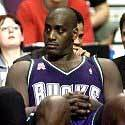

NBA: That’s A Crime!
Dareh Gregorian, N. Y. Post, Jun. 13
The NBA is rapidly turning into a national criminals’ association: A whopping 40 percent of NBA players have police records, a bombshell new book charges.
The book by investigative reporter Jeff Benedict, “Out of Bounds: Inside the NBA’s Culture of Rape, Violence & Crime” isn’t supposed to hit bookstores until later this week, but The Post located a copy that went on sale earlier.
In it, Benedict finds that 40 percent of the American players in the NBA during the 2001-02 season had police records involving a serious crime.
“It’s a situation that is out of control and absolutely demands close scrutiny,” Benedict writes.
The book is almost a “Who’s Who in the NBA,” and recounts legal scrapes involving everyone from Shaquille O’Neal, Patrick Ewing, Penny Hardway, Allen Iverson and Bonzi Wells to Ruben Patterson, Glenn Robinson and Damon Stoudamire.
The book notes that the problems with the law aren’t a distant memory for many players.
Just as All-Star Kobe Bryant was being charged with sexually assaulting a Colorado woman, “25 law enforcement agencies in 13 cities in the United States and Canada were simultaneously proceeding with arrest warrants, indictments, plea-agreement proceedings or trials involving more than a dozen other NBA players,” the book says.
Most of the player crimes involve violence against women, Benedict found.
His nationwide search, which focused on American players, turned up “33 criminal complaints of domestic violence against NBA players who played during the 2001-2002 season,” a figure he said “is probably the tip of the iceberg” because “nationally, domestic violence compares with child abuse and rape as the most underreported crime in our society.”
Sixteen of those 33 cases ended in conviction.
Many of the sexual abuse cases simply evaporate.
|

|
|
Anthony Mason.
|
Benedict recounts one case in which former Knick Anthony Mason was questioned about an alleged rape in New Jersey in 2001.
The rape complaint was the third lodged against the Miami Heat player in three years.
The first two allegations were later dropped.
In the New Jersey incident, a woman claimed Mason forced himself on her after inviting her to his hotel, then had two of his buddies join in.
“Why the [heck] would I ask you to come out here if I just wanted to talk to you?” she quoted Mason as saying in the police report.
Prosecutors believed the woman’s claims and were set to move forward with the case when the woman suddenly moved to another state and stopped cooperating with them, the book says.
Benedict writes that another alleged victim of a crime who vanished was Kim Grant, who accused O’Neal of grabbing her by the neck during a brief run-in in Orlando.
The case eventually was dropped after O’Neal hired a high-powered attorney who managed to stall the probe, the book says.
Frustrated, Grant then contemplated a lawsuit, but “virtually disappeared,” the book says.
It’s unclear if there was some kind of financial deal or if Grant just gave up the fight.
The book says that though most player incidents involve crimes against women, documents show “police officers are their second most common group of victims.”
The book cited a 1990 incident inolving then-rookie Cliff Robinson of the Portland Trail Blazers.
When police responded to a call to a fight at a Portland restaurant, an enraged Robinson was chasing a man he’d gotten into a fracas with.
The man ran up to a female police officer, Elaine Sloan, for help.
Undeterred, Robinson struck the cop “in the side of the head with such force that Sloan dropped to the ground and was later treated at a nearby hospital for injuries.”
When more police arrived and arrested Robinson, Sloan read Robinson his rights. “He mimicked her the entire time,” the book says.
When Robinson was issued four citations for assault and disorderly conduct at the police station, he told Sloan, “If I had known you were giving me all these tickets . . . I would have made the hit worthwhile.”
Robinson later pleaded guilty to assault and was ordered to undergo anger-management counseling, the book says.
The book points at the youth, wealth and life of privilege of many of the players as the reason for their authority issues.
“For many players, encounters with law-enforcement officials represent the rare instance of someone telling them no,” Benedict writes.
“Judging by the way players react when confronted by a police officer, it is no wonder why women who tell them no end up being abused.”
The HarperCollins book isn’t Benedict’s first major expose.
“Pros and Cons: The Criminals Who Play in the NFL” shocked with the revelation that 21 percent of NFL players had been arrested for serious crimes.